Funcionalidades

Fórum de dúvidas
Haverá um local onde os estudantes poderão colocar as suas dúvidas, de forma anónima ou não. Qualquer outro que veja esse pedido de ajuda, poderá responder através de chat de texto ou com fotografias.
Planeamento de eventos
Irão tambem haver secções onde estarão dispostas informações sobre acontecimentos importantes. Essas secções só estarão disponíveis a membros dessas mesmas. Por exemplo, um estudante de civil não terá acesso à área de informática.